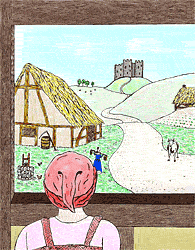

The Littlest Knight - Page 2

The Princess was the King and Queen's only child and it should come as no surprise that the little blacksmith loved her very much for she was both kind and beautiful. She was even smaller than he, and had dancing eyes and long silken hair which she wore in a coiled braid. But, alas, the little blacksmith could admire the Princess only from afar because she was, after all, a princess and he but a lowly blacksmith--not even that tall.
[ Top ]
[ Previous Page ] - [ Contents ] - [ Next Page ]Copyright ©1994 Carol Moore. All rights reserved.